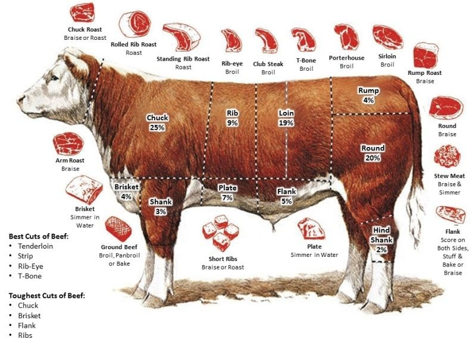
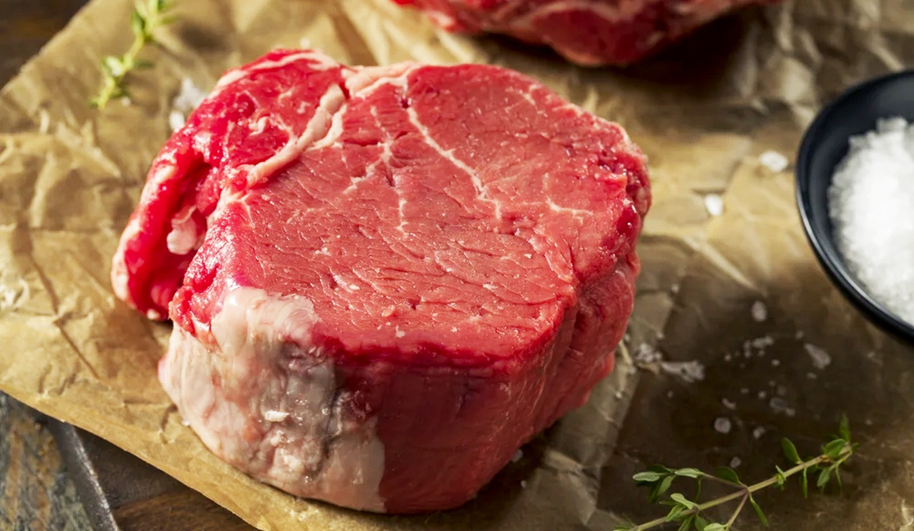
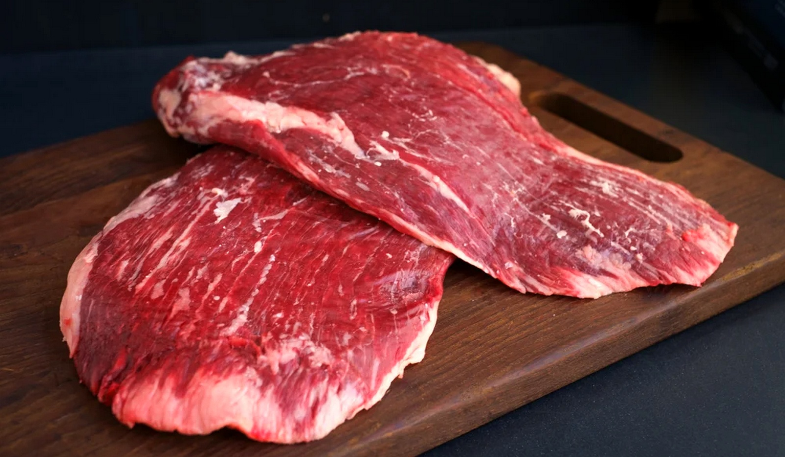

20 ВИДІВ СТЕЙКІВ, ПРО ЯКІ СЛІД ЗНАТИ КОЖНОМУ
14.08.2022
М'ясні цікавостіМи звикли сприймати м’ясо доволі просто: яловичина — це яловичина, а стейк — це стейк.
Та коли у ресторані офіціант запитує: «Ви будете стейк Нью-Йорк чи Рібай? Чи можливо, Філе Міньйон?», просто обираємо за назвою, що більше сподобалась.
Але стейки відрізняються:
- Місцем вирізу із туші
- Структурою м’яса
- Кількістю жирових прошарків
- Мармуровістю
- Способами і термінами витримки: Читати більше
Сьогодні хочемо розповісти вам про класичні («преміальні») та альтернативні стейки. Які вони бувають, чим відрізняються, особливості кожного.
Якщо ви плануєте ще хоч раз навідатися в стейк-хаус або самостійно приготувати смачний стейк вдома на вечерю — читайте далі.
Класичні стейки
Класичні стейки — це стейки із найкращих частин туші бичків. А саме з тих м’язів, які за життя тварини були мінімально залученими у русі, а отже не скорочувалися постійно, тому там майже немає затисків. Це означає, що м’ясо ніжне та м’яке за структурою, легше смажиться, простіше готується і «тане» у роті. Такі м’язи займають всього 10-12% туші, і саме тому так ціняться.
До класичних стейків відносяться:
- Рібай
- Ковбой
- Нью-Йорк
- Філе Міньйон
- Шатобріан
Стейк Рібай
Класика. Один із найвідоміших та найвишуканіших стейків. Зруб м’яса проводиться із товстого краю спинної частини реберної клітини бика від 6 до 12 ребра. Особливість рібая — значна кількість жирових прошарків, що рівномірно розподілена по всьому шматку м’яса. Це робить зовсім невибагливим у приготуванні, і водночас дуже соковитим стейком із маслянистим горіховим ароматом.

Стейк Філе Міньйон
Найніжніший шматочок м’яса зі всієї туші. Вирізається з передньої частини туші із великого поперекового м’яза — «лінивого м’яза», що майже не задіяний при русі тварини. У Філе Міньйон практично немає з’єднувальних тканин. Навіть при товщині 5-8 см цей стейк смажиться швидко, а потім тане у роті. Смак із вершково-оксамитовою ніжністю, але не сильно виділяється м’ясною виразністю.
Альтернативні стейки
Альтернативні стейки — це стейки із більш дешевих частин туші. Таких, де м’язи за життя були більш навантажені та напружені, скорочувалися при русі. Тому і структура м’яса не така ніжна, у порівнянні із преміальними стейками. Втім альтернативні стейки НЕ поступаються класиці у смакових якостях, скоріше у способі отримання та структурі м’яса. Отже, їх трішки важче готувати, адже потрібно пам’ятати про те, що потрібно зм’якшити м’ясо — відбити чи промаринувати.
До альтернативних стейків відносяться:
- Чак-ролл
- Денвер
- Фланк
- Мачете
Чак-ролл стейк
М'який, соковитий шматок м’яса, що вирізається із довгого спинного м'яза між лопаткою та ребрами. Майже не містить жирових прошарків. Має довгасту форму, тому нагадує класичну вирізку. За смаком схожий на Рібай, але більш жилястий та жорсткий. Потребує маринування.
Стейк Фланк
Відріз від нижньої частини живота ближче до ноги. Це досить жорсткий шматок м’яса, з крупними і довгими волокнами. Смак яскравий, з гарно вираженим м’ясним ароматом. Рекомендується обов’язково маринувати перед приготуванням.
